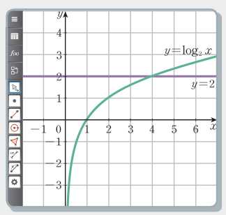

2026학년도 1학기 | 대수
로그함수 \(y=\log_2 x\)의 그래프와 직선 \(y=2\)를 한 좌표평면에 그렸다.

[개방형 발문] ① 그래프 \(y=\log_2 x\)와 직선 \(y=2\)는 몇 번 만나는가? ② 교점의 \(x\)좌표가 방정식 \(\log_2 x=2\)의 해가 되는 이유는? 그 해를 그래프에서 읽어 보자. 또 \(x\le0\)인 쪽에서는 왜 그래프가 없을까?
[연결] 로그함수도 일대일함수라 교점은 하나(\(x=4\)). 그런데 로그함수의 정의역은 양의 실수 전체다 — 식을 정리해 얻은 값이 진수를 음수나 \(0\)으로 만들면 그 값은 해가 아니다. 오늘은 ① 로그방정식, ② 로그부등식, ③ 실생활 문제(소리의 크기·지진의 규모)를 진수 조건과 함께 해결한다.
\(a\gt0,\ a\ne1\)이고 \(x_1\gt0,\ x_2\gt0\)일 때,
예제 4 — 다음 방정식을 푸시오.
(1) \(\log_2(x-1)=4\) : \(x-1=2^4=16\) → \(x=17\) ···① / 진수 조건 \(x-1\gt0\) → \(x\gt1\) ···② → 답 \(x=17\)
(2) \(\log_5(3x-2)=\log_5(2x+1)\) : \(3x-2=2x+1\) → \(x=3\) ···① / \(3x-2\gt0,\ 2x+1\gt0\) → \(x\gt\dfrac23\) ···② → 답 \(x=3\)
⚠ 로그의 진수에 미지수가 있으면 진수가 양수라는 조건을 함께 풀어 공통 범위를 확인한다.
\(x_1\gt0,\ x_2\gt0\)에 대하여
예제 5 — 다음 부등식을 푸시오.
(1) \(\log_2(x-3)\lt2\) : \(2=\log_2 4\), 밑 \(2\gt1\) → \(x-3\lt4\), \(x\lt7\) / 진수 \(x\gt3\) → \(3\lt x\lt7\)
(2) \(\log_{\frac13}(2x-1)\ge\log_{\frac13}(3x+2)\) : 밑 \(\dfrac13\lt1\) → \(2x-1\le3x+2\), \(x\ge-3\) / 진수 \(x\gt\dfrac12\) → \(x\gt\dfrac12\)
⚠ 주의: 밑이 \(1\)보다 큰지 작은지에 따라 부등호 방향이 달라진다. 그리고 진수 조건과의 공통 범위가 답이다.
소리의 세기가 \(I\) W/m²인 음원에서 \(d\) m 떨어진 곳에서 잰 소리의 크기를 \(P\) dB라 하면 \(P=10\left(12+\log\dfrac{I}{d^2}\right)\).
예제 6: \(50\) m 떨어진 곳의 소리 크기가 \(80\) dB일 때 음원의 소리의 세기는?
\(80=10\left(12+\log\dfrac{x}{50^2}\right)\) → \(\log\dfrac{x}{50^2}=-4\) → \(\dfrac{x}{2500}=10^{-4}\) → \(x=\) \(0.25\) W/m²
읽는 법: \(\log A=k \iff A=10^k\). 실생활 로그 식은 "로그만 남기기 → 지수로 바꾸기" 두 단계면 된다.
밑을 같게 한 뒤 진수를 비교하고, 진수 조건을 확인하는 단계
밑이 다른 로그 · 실생활 로그 식을 해석하는 단계
"틀려야 는다!" 진수 조건 · 밑 조건이 근을 걸러낸다
(1) 두 로그를 합쳐 \(\log_2(x-1)(x-3)\)으로 만들면 \((x-1)(x-3)\gt0\)만 남아 \(x\lt1\)도 허용되는 것처럼 보인다. 합치기 전의 진수 조건 \(x-1\gt0,\ x-3\gt0\)을 먼저 적어 두어야 한다.
(2) 밑에 미지수가 있으면 밑 조건 \(x\gt0,\ x\ne1\)과 진수 조건 \(x+6\gt0\)을 모두 확인한다. 음수 근은 밑이 될 수 없다.
함정 두 개가 겹쳐 있다. ① 밑 \(\dfrac12\lt1\) → 진수로 옮길 때 부등호를 뒤집는다. ② \(x^2-1\le8\)만 풀면 \(-3\le x\le3\)이 나오는데, 진수 조건 \(x\gt1\)을 빼먹으면 틀린다.
📖 출처: 교과서 57쪽 · 생각 넓히기 활동 2 교과서 57쪽 · 생각 넓히기 활동 2 그대로
난이도 ★★★ (7분) · 핵심: \(\log_a x\) 꼴이 반복되면 치환 — \(\log_2 x^2=2\log_2 x\) (진수 조건 \(x\gt0\))
핵심: 지수 치환(\(t\gt0\))과 달리 로그 치환 \(t=\log_2 x\)는 \(t\)가 모든 실수 — 음수 \(t\)도 버리지 않는다.
📖 출처: 교과서 58쪽 · 탐구&융합 교과서 58쪽 · 탐구&융합 (벤포드의 법칙) 변형
난이도 ★★★ (7분) · 핵심: 로그의 성질(차 → 몫)로 비율의 합을 간단히
핵심: 균등하다면 \(\dfrac39\approx33\,\%\)일 텐데 실제로는 약 \(60\,\%\) — 회계 부정 탐지에 쓰이는 이유.
스마트폰으로 우측 QR코드를 스캔하여, 아래 3가지 유형 중 하나 이상을 체크하고 통합 서술형으로 작성해 제출한다.